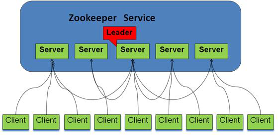
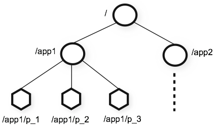
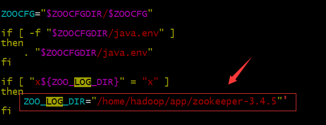
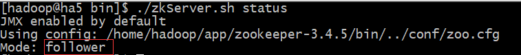
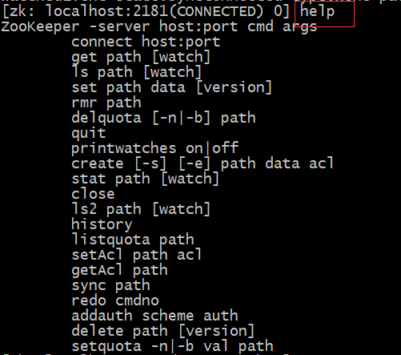
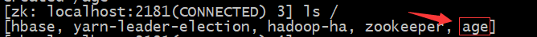

zookeeper详解
回顾：
任务
1.结合实际需求场景详细讲解zookeeper的概念 2.完成zookeeper集群的搭建 3.简单使用zookeeper shell操作zookeeper 4.详细讲解zookeeper的java api的使用及典型的需求场景的案例代码
目标
1.深入理解zookeeper的使用场景及概念 2.熟练使用zookeeper的java api 3.理解监听集群主机上下线案例代码
第一节：zookeeper概述
1.1 什么是zookeeper
Zookeeper是一个分布式协调服务；就是为用户的分布式应用程序提供协调服务
zookeeper是为别的分布式程序服务的
Zookeeper本身就是一个分布式程序（只要有半数以上节点存活，zk就能正常服务）
Zookeeper集群的角色： Leader 和 follower （Observer）

zookeeper在底层最核心的两个功能：
- 管理(存储，读取)用户程序提交的数据
- 并为用户程序提供数据节点监听服务
1.2 zookeeper服务的应用场景
- 主从协调
- 服务器节点动态上下线
- 统一配置管理
- 分布式共享锁
- 统一名称服务等等
1.3 zookeeper集群特性
- Zookeeper：一个leader，多个follower组成的集群
- 全局数据一致：每个server保存一份相同的数据副本，client无论连接到哪个server，数据都是一致的
- 分布式读写，更新请求转发，由leader实施
- 更新请求顺序进行，来自同一个client的更新请求按其发送顺序依次执行
- 数据更新原子性，一次数据更新要么成功，要么失败
- 实时性，在一定时间范围内，client能读到最新数据
1.4 zookeeper数据结构
层次化的目录结构，命名符合常规文件系统规范

每个节点在zookeeper中叫做znode,并且其有一个唯一的路径标识
节点Znode可以包含数据和子节点（但是EPHEMERAL类型的节点不能有子节点）
客户端应用可以在节点上设置监视器
1.5节点类型
Znode有两种类型：
- 短暂（ephemeral）（断开连接自己删除）
- 持久（persistent）（断开连接不删除）
Znode有四种形式的目录节点（默认是persistent ）
PERSISTENT 持久类型
PERSISTENT_SEQUENTIAL（持久序列类型/test0000000019 ）sequential
EPHEMERAL 短暂类型
EPHEMERAL_SEQUENTIAL 短暂序列类型
创建znode时设置顺序标识，znode名称后会附加一个值，顺序号是一个单调递增的计数器，由父节点维护
在分布式系统中，顺序号可以被用于为所有的事件进行全局排序，这样客户端可以通过顺序号推断事件的顺序
1.6 Zookeeper 数据结构特点
- 每个子目录项如 NameService 都被称作为 znode，这个 znode 是被它所在的路径唯一标识，如 Server1 这个 znode 的标识为 /NameService/Server1
- znode 可以有子节点目录，并且每个 znode 可以存储数据，注意 EPHEMERAL类型的目录节点不能有子节点目录
- znode 是有版本的，每个 znode 中存储的数据可以有多个版本，也就是一个访问路径中可以存储多份数据
- znode 可以是临时节点，一旦创建这个 znode 的客户端与服务器失去联系，这个 znode 也将自动删除，Zookeeper 的客户端和服务器通信采用长连接方式，每个客户端和服务器通过心跳来保持连接，这个连接状态称为 session，如果 znode 是临时节点，这个 session 失效，znode 也就删除了
- znode 的目录名可以自动编号，如 App1 已经存在，再创建的话，将会自动命名为 App2
- znode 可以被监控，包括这个目录节点中存储的数据的修改，子节点目录的变化等，一旦变化可以通知设置监控的客户端，这个是 Zookeeper 的核心特性，Zookeeper 的很多功能都是基于这个特性实现的，后面在典型的应用场景中会有实例介绍
1.7 如何使用
Zookeeper作为一个分布式的服务框架，主要用来解决分布式集群中应用系统的一致性问题，它能提供基于类似于文件系统的目录节点树方式的数据存储，但是 Zookeeper并不是用来专门存储数据的，它的作用主要是用来维护和监控你存储的数据的状态变化。通过监控这些数据状态的变化，从而可以达到基于数据的集群管理，后面将会详细介绍 Zookeeper能够解决的一些典型问题，这里先介绍一下，Zookeeper 的操作接口和简单使用示例。
第二节 zookeeper集群的配置
2.1 集群安装
Zookeeper使用java编写，运行在jvm上，所以需要提前安装并配置好好java环境，推荐Oracle jdk1.7及以上版本。
下载地址：http://apache.opencas.org/zookeeper/ 从官方网站上下载tar.gz包，我们这里使用的是：zookeeper-3.4.7.tar.gz
集群规划
主机名（hostname） 安装软件 运行进程 min1 zookeeper-3.4.7 QuorumPeerMain min2 zookeeper-3.4.7 QuorumPeerMain min3 zookeeper-3.4.7 QuorumPeerMain
安装步骤
在min1机器上安装zookeeper-3.4.7
上传zookeeper-3.4.7.tar.gz到/ home / hadoop / apps
解压到当前目录（/ home / hadoop / apps）
xxxxxxxxxxcd /home/hadoop/appstar -zvxf zookeeper-3.4.7.tar.gz配置
添加一个zoo.cfg配置文件
xxxxxxxxxxcd 在/home/hadoop/apps/zookeeper-3.4.7/confmv zoo_sample.cfg zoo.cfg#在/ home / hadoop / apps/zookeeper-3.4.7/创建一个data文件夹mkdir data修改配置文件（zoo.cfg）
xvi zoo.cfg #添加如下内容#为zookeeper指定一个工作目录，此目录要手动创建dataDir=/home/hadoop/app/zookeeper-3.4.7/data#指定集群中各个机器之间地址及通信端口#3888是选举端口 2888是leader和follower通信端口#注意 域名（如min1） 都要在各个机器/etc/hosts文件中配置了#在zoo.cfg最后添加如下内容server.1=min1:2888:3888server.2=min2:2888:3888server.3=min3:2888:3888在上面server.N对应的主机的“dataDir=/home/hadoop/app/zookeeper-3.4.7/data”目录下创建一个myid文件，里面内容是N（ server.1对应的min1里面的myid文件内容为1
server.2对应的min2里面的myid文件内容为2
server.3对应的min3里面的myid文件内容为3）
xxxxxxxxxxcd /home/hadoop/app/zookeeper-3.4.7/datatouch myid #创建一个myid的文件echo "1" > myid #写入的内容要对应，本机是min1 设置的名称是server.1 因此写入时，要将1写入mydid
设置zookeeper日志文件的zookeeper.out存放目录
xxxxxxxxxxvi /home/hadoop/apps/zookeeper-3.4.7/bin/zkEnv.sh #在如下位置设置
将在min1配置好的zk拷贝到min2和min3节点
xxxxxxxxxxscp -r /home/hadoop/apps/zookeeper-3.4.7/ min2:/home/hadoop/apps/#在min2的机器中修改myid的值cd /home/hadoop/app/zookeeper-3.4.7/dataecho "2" > myidscp -r /home/hadoop/apps/zookeeper-3.4.7/ min3:/home/hadoop/apps/#在min3的机器中修改myid的值cd /home/hadoop/app/zookeeper-3.4.7/dataecho "3" > myid
2.2 集群的启动
分别在min1、min2和min3中启动zookeeper
xxxxxxxxxxcd /home/hadoop/apps/zookeeper-3.4.7/bin./zkServer.sh start #启动zookeeper分别在min1、min2和min3中执行jps 显示如下进程，则启动成功

查看zk状态
xxxxxxxxxxcd /home/hadoop/apps/zookeeper-3.4.7/bin./zkServer.sh status #启动zookeeper在三台机器中分别显示如下信息：



2.3 集群的测试使用
在任何一台机器上执行如下命令进入zk客户端的shell
xxxxxxxxxxcd /home/hadoop/apps/zookeeper-3.4.7/bin./zkCli.sh 执行完zkcli.sh命令后进入的界面效果如下：

通过help命令查看zk客户端的shell命令帮助

zk服务器中也有类似 linux中的目录结构，”/“ 是它的目录根，在这个根下可以创建任何一个key、value对，其中key值就相当于一个linux中子目录名，但是这个子目录是可以有值的，就是那个value。这个key-value对在zk中叫一个node 这个node可以有子孙node。
在根下创建一个node节点key为age， value为18
xxxxxxxxxxcreate /age 18显示“根”下所有node
xxxxxxxxxxls /
获得一个node的value值
xxxxxxxxxxget /age
第三节 Zookeeper java API的使用
3.1 eclipse环境配置
创建一个java项目
依赖的jar包
xxxxxxxxxxzookeeper-3.4.7\lib下的jline-0.9.94.jarlog4j-1.2.15.jarnetty-3.2.2.Final.jarslf4j-api-1.6.1.jarslf4j-log4j12-1.6.1.jarzookeeper-3.4.5\zookeeper-3.4.7.jar
3.2 基本操作
xxxxxxxxxxpublic class TestCRUD { private static final String connectString = "min1:2181," +"min2:2181," +"min3:2181"; private static final int sessionTimeout = 2000; public void testConnect(){ ZooKeeper zkClient = null; try { //连接成功后，会回调watcher监听，此连接操作是异步的，执行完new语句后，直接调用后续代码 zkClient = new ZooKeeper(connectString, sessionTimeout, new Watcher() { /** * public enum EventType { None (-1), NodeCreated (1), NodeDeleted (2), NodeDataChanged (3), NodeChildrenChanged (4); */ public void process(WatchedEvent event) { // 收到事件通知后的回调函数（应该是我们自己的事件处理逻辑） System.out.println("=========="+event.getType()+"===="+event.getState()); } }); } catch (IOException e) { e.printStackTrace(); } //连接状态值 CONNECTING, ASSOCIATING, CONNECTED, CONNECTEDREADONLY, System.out.println("-------------------"+zkClient.getState()); while(true){ try {Thread.sleep(1000);} catch (InterruptedException e) {e.printStackTrace();} //等待zookeeper客户端连接服务器成功的，查看连接时的状态信息。 System.out.println("====-----===="+zkClient.getState()); } } public void testCreate() throws Exception { ZooKeeper zkClient = new ZooKeeper(connectString, sessionTimeout, new Watcher() { public void process(WatchedEvent event) { System.out.println("=========="+event.getType()); } }); Thread.sleep(10*1000);//等待的目的是使zookeeper客户端连接成功后，才执行后续操作 if(zkClient.getState() == States.CONNECTED){//连接服务器连接成功 String nodeCreated = zkClient.create("/age", //：要创建的节点的路径 "18".getBytes(), //节点中的数据 Ids.OPEN_ACL_UNSAFE, //节点的权限 CreateMode.PERSISTENT);//节点的类型 System.out.println("创建成功后，节点的真是路径是："+nodeCreated); } } //判断znode是否存在 public void testExist() throws Exception{ ZooKeeper zkClient = new ZooKeeper(connectString, sessionTimeout, new Watcher() { //修改目标节点 event.getType()的值是NodeDataChanged public void process(WatchedEvent event) { System.out.println("=========="+event.getType()); } }); Thread.sleep(10*1000);//等待的目的是使zookeeper客户端连接成功后，才执行后续操作 //第二个参数表示 是否监听”/age“节点的状态的改变，为true时，则监听，当另一个zookeeper客户端修改、删除该节点的值时，回调watcher Stat stat = zkClient.exists("/age", true); System.out.println(stat==null?"not exist":"exist"); Thread.sleep(20*1000); } //获取znode的数据 public void getData() throws Exception { ZooKeeper zkClient = new ZooKeeper(connectString, sessionTimeout, new Watcher() { public void process(WatchedEvent event) { System.out.println("=========="+event.getType()); } }); Thread.sleep(10*1000);//等待的目的是使zookeeper客户端连接成功后，才执行后续操作 byte[] data = zkClient.getData("/age", false, null); System.out.println(new String(data)); } // 获取子节点 public void getChildren() throws Exception { ZooKeeper zkClient = new ZooKeeper(connectString, sessionTimeout, new Watcher() { public void process(WatchedEvent event) { System.out.println("=========="+event.getType()); } }); Thread.sleep(10*1000);//等待的目的是使zookeeper客户端连接成功后，才执行后续操作 //只能获得一个路径下的直接子节点的信息，不能递归获取孙节点 List<String> children = zkClient.getChildren("/", true); for (String child : children) { System.out.println(child); } Thread.sleep(Long.MAX_VALUE); } //删除znode public void deleteZnode() throws Exception { ZooKeeper zkClient = new ZooKeeper(connectString, sessionTimeout, new Watcher() { public void process(WatchedEvent event) { System.out.println("=========="+event.getType()); } }); Thread.sleep(10*1000);//等待的目的是使zookeeper客户端连接成功后，才执行后续操作 //参数2：指定要删除的版本，-1表示删除所有版本 zkClient.delete("/age", -1); }}3.3 监听集群中主机的上下线
案例说明：
1.DistributedServer程序一运行起来就向zookeeper的/servers路径下创建一个临时节点
如该类启动三个实例时，分别为传入三个字符串，分别为 server1，server2，server3 根据代码逻辑，会在zookeeper的/servers下创建三个EPHEMERAL_SEQUENTIAL类型的节点，节点名为 /servers/server000001 此节点对应的value是server1 /servers/server000002 此节点对应的value是server2 /servers/server000003 此节点对应的value是server3
2.DistributedClient代码实时夺取/servers下的节点集合内容
如 [/servers/server000001,/servers/server000002,/servers/server000003] 说明这个客户端所在的机器，可用的集群有三台机器 DistributedClient代码监听了/servers目录的子节点，当有机器掉线时，/servers下的节点集合内容会变化的 如 [/servers/server000001,,/servers/server000003] [/servers/server000003] 这样也就实时感知了三台集群中机器的状态
总结：有四台机器组成的集群，如a1,a2,a3,a4其中a1是主节点；a2,a3,a4是从节点
DistributedServer代码分别运行在a2,a3,a4从节点上 DistributedClient代码运行在a1主节点上
代码如下：
xxxxxxxxxxpublic class DistributedServer { private static final String connectString = "min1:2181," +"min2:2181," +"min3:2181"; private static final int sessionTimeout = 2000; private static final String parentNode = "/test2017-12-25"; private ZooKeeper zk = null; public static void main(String[] args) throws Exception { // 获取zk连接 DistributedServer server = new DistributedServer(); server.getConnect(); Thread.sleep(10*1000); // 利用zk连接注册服务器信息 server.registerServer(args[0]); // 启动业务功能 server.handleBussiness(args[0]); } /** * 创建到zk的客户端连接 */ public void getConnect() throws Exception { zk = new ZooKeeper(connectString, sessionTimeout, new Watcher() { public void process(WatchedEvent event) { // 收到事件通知后的回调函数（应该是我们自己的事件处理逻辑） System.out.println(event.getType() + "---" + event.getPath()); try { zk.getChildren("/", true); } catch (Exception e) { } } }); } /** * 向zk集群注册服务器信息 */ public void registerServer(String hostname) throws Exception { // CreateMode.EPHEMERAL_SEQUENTIAL 节点类型 /** * 参数3 acl是Access Contral * ZooKeeper使用ACL来控制访问其znode（ZooKeeper的数据树的数据节点）。ACL的实现方式非常类似于UNIX文件的访问权限：它采用访问权限位 允许/禁止 对节点的各种操作以及能进行操作的范围。 * 不同于UNIX权限的是，ZooKeeper的节点不局限于 用户（文件的拥有者），组和其他人（其它）这三个标准范围。ZooKeeper不具有znode的拥有者的概念。相反，ACL指定id集以及与之对应的权限。 * http://ifeve.com/zookeeper-access-control-using-acls/ */ String create = zk.create(parentNode + "/server", hostname.getBytes(), Ids.OPEN_ACL_UNSAFE, CreateMode.EPHEMERAL_SEQUENTIAL); System.out.println(hostname + "is online.." + create); } /** * 业务功能 */ public void handleBussiness(String hostname) throws InterruptedException { System.out.println(hostname + "start working....."); Thread.sleep(Long.MAX_VALUE); }} public class DistributedClient { private static final String connectString = "min1:2181," +"min2:2181," +"min3:2181"; private static final int sessionTimeout = 2000; private static final String parentNode = "/test2017-12-25"; private volatile List<String> serverList; private ZooKeeper zk = null; public static void main(String[] args) throws Exception { // 获取zk连接 DistributedClient client = new DistributedClient(); client.getConnect(); Thread.sleep(10*1000); // 获取servers的子节点信息（并监听），从中获取服务器信息列表 client.getServerList(); // 业务线程启动 client.handleBussiness(); } /** * 创建到zk的客户端连接 */ public void getConnect() throws Exception { zk = new ZooKeeper(connectString, sessionTimeout, new Watcher() { public void process(WatchedEvent event) { // 收到事件通知后的回调函数（应该是我们自己的事件处理逻辑） try { //重新更新服务器列表，并且注册了监听 getServerList(); } catch (Exception e) {} } }); } /** * 获取服务器信息列表 */ public void getServerList() throws Exception { // 获取服务器子节点信息，并且对父节点进行监听 List<String> children = zk.getChildren(parentNode, true); // 先创建一个局部的list来存服务器信息 List<String> servers = new ArrayList<String>(); for (String child : children) { // child只是子节点的节点名 byte[] data = zk.getData(parentNode + "/" + child, false, null); servers.add(new String(data)); } // 把servers赋值给成员变量serverList，已提供给各业务线程使用 serverList = servers; //打印服务器列表 System.out.println(serverList); } /** * 业务功能 * * @throws InterruptedException */ public void handleBussiness() throws InterruptedException { System.out.println("client start working....."); Thread.sleep(Long.MAX_VALUE); }}